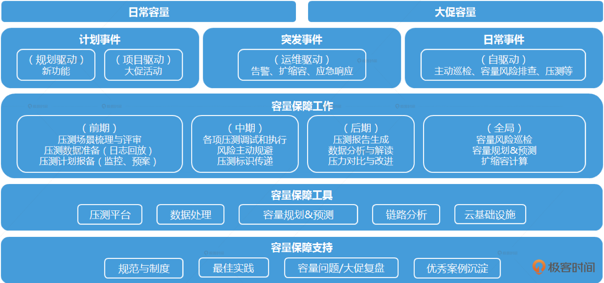

- 00 开篇词 互联网时代，人人肩负容量保障的职责.md.html
- 01 容量保障的目标：容量保障的目标是什么？该如何度量？.md.html
- 02 容量测试与验证：怎样科学实施容量测试？.md.html
- 03 容量指标分析经典5问：响应时间真的是越短越好吗？.md.html
- 04 容量治理的三板斧：扩容、限流与降级.md.html
- 05 全链路压测：系统整体容量保障的“核武器”（上）.md.html
- 06 全链路压测：系统整体容量保障的“核武器”（下）.md.html
- 07 工具进化：如何实现一个分布式压测平台.md.html
- 08 容量预测（上）：第三只眼，通过AI预测服务容量瓶颈.md.html
- 09 容量预测（下）：为不同服务“画像”，提升容量预测准确性.md.html
- 10 浅谈排队论：数学之美，通过建模计算容量.md.html
- 11 与时俱进：云原生下的容量保障新趋势.md.html
- 12 大促容量保障体系建设：怎样做好大促活动的容量保障工作（上）.md.html
- 13 大促容量保障体系建设：怎样做好大促活动的容量保障工作（下）.md.html
- 14 容量保障组织建设：容量保障需要什么样的团队？.md.html
- 15 小公司也能做好容量保障：建设经济实用型的容量保障体系.md.html
- 加餐 学习容量保障的那些经典资料.md.html
- 结束语 做时间的朋友，成功是持续累积而成的.md.html
- 捐赠
结束语 做时间的朋友，成功是持续累积而成的
你好，我是吴骏龙。到今天为止，我的专栏就要告一段落了。
坦白说，写专栏真的蛮辛苦的，我原本以为自己作为一名善于总结、文笔尚可、始终奋战在一线的技术管理人员，把自己的经验汇总成文分享出来，应该不是什么难事，但实际情况却远远超过我的想象。专栏写作几乎占用了我3个多月以来所有的业余时间，由于互联网行业众所周知的工作节奏，我每天下班回到家都要快22点了，熬夜写作成了常态，真真切切体会到了一把“痛并快乐着”。
刚开始构思这个专栏的时候，我考虑到容量保障是有一定门槛的技术内容，因此对它的定位是让参与过或从事过容量保障工作的技术人员能够学习到系统化的方法论，并适当拔高。但我与一些从业者深入交流后，发现其实很多群体都对容量保障工作抱有极大的热情，这才有了专栏的最终定位，无论你是从未接触过容量保障的新手，还是已经在容量保障领域小有成就的资深人员，这个专栏都能带给你帮助和启发。
不过，我并不希望我的专栏带给你的仅仅是速成的效果，而是致力于给到你容量保障的核心方法论和思维方式，这样即便多年以后你重新回顾这个专栏，依然能够时读时新，有不同的收获。
通过整个专栏的学习，你再回顾一下我在开篇词中给出的容量保障方法论大图，是不是觉得清晰了很多，也收获了很多？

专栏总有结尾，但学习永无止境，我想再和你分享几个我的成长体会，希望能让你今后的工作和学习道路受益。
全局视野
不谋全局者，不足以谋一隅。我见过不少技术人员在某一领域小有成就，但在职业生涯很长一段时间内都无法更进一步，其中一个很大的原因就是缺乏全局视野，所完成的工作只是达到了局部最优，没有实现全局最优。想象一下，在上面的容量保障方法论大图中，如果我们只是把压测工作挑出来做好，能全面保障服务容量不出问题吗？
全局视野的培养需要一定的积累和历练。我的做法是，每接到一个工作任务，或者我判断需要做的事情，我会先跳出这件事本身，站在更高的视角去思考，最后再回到细节中去。
举个例子，如果要建设全链路压测，我除了考虑全链路压测本身的技术方案以外，还会考虑它需要哪些团队参与技术改造？压测发现的问题谁来解决？压测相关人员值守该怎样组织？压测本身有什么局限性？需不需要其他工作辅助？等等，把这些条条框框都想明白了以后，再去看每个框架内具体要做些什么事情。
如果你坚持以这样的方式思考问题，久而久之，思维惯性就形成了。相信我，你会发现自己潜移默化地具备了全局视野。
跳出边界
目光短浅的人总是充满边界感的，喜欢给自己设定各种条条框框，比如：“我是测试，只负责暴露问题，问题让研发去分析”，又比如：“我服务的容量不足，是因为依赖的B服务响应时间上升了，我也改不了啊，不关我的事”。
任何的限制，都是从自己的内心开始的，很多时候我们不愿意跳出边界的原因在于惰性使然，但如果我们永远固守着自己擅长的领域，不愿跳出舒适圈，是很难成长的。
阿里本地生活的前任CTO张雪峰经常鼓励我们要跳出边界做事情，尤其是面对一些三不管的灰色地带更是如此，哪怕短期内出不了成绩。我们身边也有耳熟能详的正面案例，雷军身价已经超过百亿美元了，但依然在自己51岁时选择再次投入新的造车领域进行创业，这就是跳出边界的榜样。
可以说，跳出边界，是快速成长的第一驱动力。
实践先行
有句流行的名言叫“Talk is cheap, show me the code.”，我喜欢把它翻译成“纸上得来终觉浅，绝知此事要躬行”。实践是保持职场竞争力的有力手段，这也是我从事技术管理工作多年，依然将大部分工作精力投入在一线的原因，写写代码，搭搭框架，时而去解决一些疑难杂症，保持自己的技术热度。
推荐一个我很喜欢的实践做法，叫做PoC（Proof of Concept，概念验证），指的是当你有一个想法时，可以通过一个简单的实现来证明它在技术上的可行性，这个实现可以是不完整的，但它会迫使你放弃纸上谈兵，充分贯彻实践先行的理念。现在流行的MVP策略（Minimum Viable Product，最小可行产品），也有异曲同工之妙，只是更偏向于产品和用户。
我在推动容量预测工作伊始，团队中很多同事都觉得这太难了，不相信能做成，于是我花了大约一周的时间写了一个PoC，对一个服务成功进行了准确的容量预测。即便后面我们又遇到了很多困难，但大家本着实践的精神不断探索新方法和新思路，再也没有人打退堂鼓了。
再长的路，一步步都能走完，再短的路，不迈开双脚也无法到达。 努力实践，勇于实践，你就能将不可能变为可能。
说完了我的成长体会，最后以一句名言与你共勉：“成功不是将来才有的，而是从决定去做的那一刻起，持续累积而成”。希望你能持续学习，持续提升，做时间的朋友，迈向更高的山峰！
在课程的最后，我为你准备了一份结课问卷，希望你能花 1 分钟时间填写一下，我想听一听你对这门课的反馈。只要填写，就有机会获得一顶极简棒球帽或者是价值 99 元的课程阅码。期待你的畅所欲言。- ](https://jinshuju.net/f/yfxgHA)
© 2019 - 2023 Liangliang Lee. Powered by gin and hexo-theme-book.